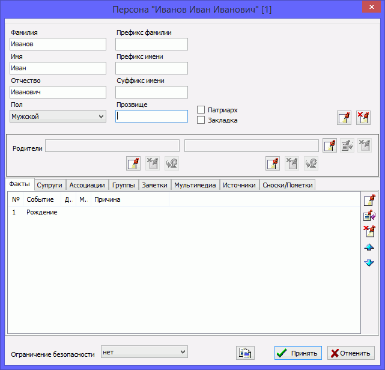

Person record
A person record is the most important record type in a genealogical database. Such a record contains all the information
about a person. GEDKeeper allows you to store the full name, nickname, and sex in a person record. You can list all events and
facts that relate to the person's life. Using GEDKeeper you easily investigate family and social relations of
the person (associations with other people). GEDKeeper never restricts you in the number of a person's families and
children. Also, you can divide people by different social groups, add additional indicators to improve obviousness
(references and footnotes), add unlimited number of notes, multimedia materials and sources, and add a person's
portrait for displaying in trees.
This is the list of dialog tabs and respective data categories you can change:
- Event represents an event or fact from person's life.
-
Family lists marriages of person or family relations; common children are specified
in the dedicated dialog.
- Association lists a person's social relations.
-
Group is a way to unite persons by social relations, which makes navigation and
search more effective.
- Note is arbitrary text about person.
- Multimedia content attaches photos, scanned documents, and portraits.
-
Source represents used documents, correspondence, and other kinds of source of
information about a person.
-
Reference/footnote is an additional indicator for GEDKeeper itself or a way
to create handy a classification.

-
You change a person's parents using a special dedicated panel with two fields—for person's father and mother,
and three groups of buttons. At first glance this may look too complex, but in action this gives flexible editing of object
properties. The button group
 ,
,
 , and
, and  to the right
of the parent names modifies the parents' family as a whole object. That is, you can
use the button to attach an affected person to an existing family. You use the
button to modify properties of an already attached family without the
necessity to close the currently opened person editing window. You use the button
to the right of parent names to detach a person from the family.
to the right
of the parent names modifies the parents' family as a whole object. That is, you can
use the button to attach an affected person to an existing family. You use the
button to modify properties of an already attached family without the
necessity to close the currently opened person editing window. You use the button
to the right of parent names to detach a person from the family.
-
The same buttons: ,
, and
 located under
the name of each parent perform other functions. The button adds a new family
if one was not added already, and then adds the concrete parent to this family (father or mother, depending on the
selected section). The button removes a parent (father or mother) from a
person's family. To quickly jump to a parent's person record you use the
button.
located under
the name of each parent perform other functions. The button adds a new family
if one was not added already, and then adds the concrete parent to this family (father or mother, depending on the
selected section). The button removes a parent (father or mother) from a
person's family. To quickly jump to a parent's person record you use the
button.
-
There is a dedicated edit box to the right of the person's full name and sex, where you can enter additional
information about person name: nickname, pseudonym, status, name prefix, and suffix.
-
To modify an object of any type that is related to the affected person, you use a specific tab and the following
standard buttons: ,
, and .
You can add any number of events to the affected person, that are related to his/her life, various attributes, notes,
photos or other multimedia content, and source materials that mention the person, marriages, and groups. You use the special
list of associations to add additional relations between people.
-
You change information about a married couple on the "Spouses" tab using the
, ,
and buttons. When you add or change one of conjoints, the family editor
window appears. Using that window, you do what you need: add a spouse, children, or event. Using the arrow buttons, you can
change the order of marriages for the selected person.
There is a uniting table on the "Persons" tab of the main working window which includes all persons
available in the database. A person summary to the right of the table shows all information about the selected person and
references to other records.